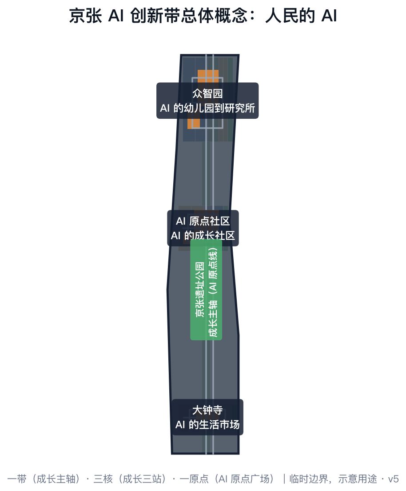
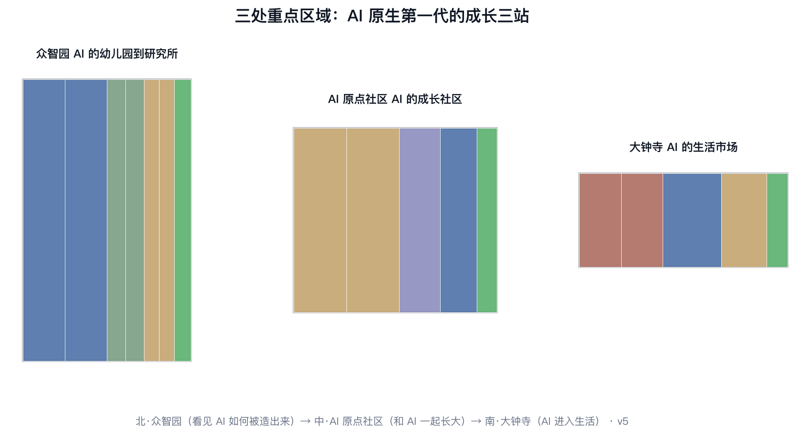
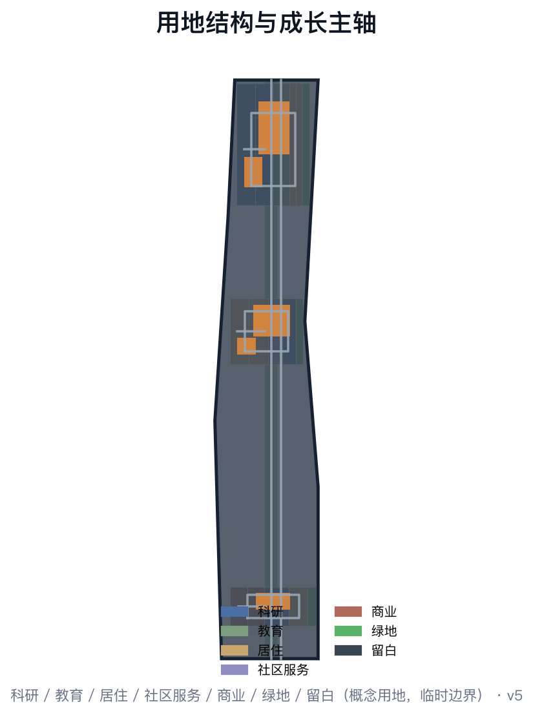
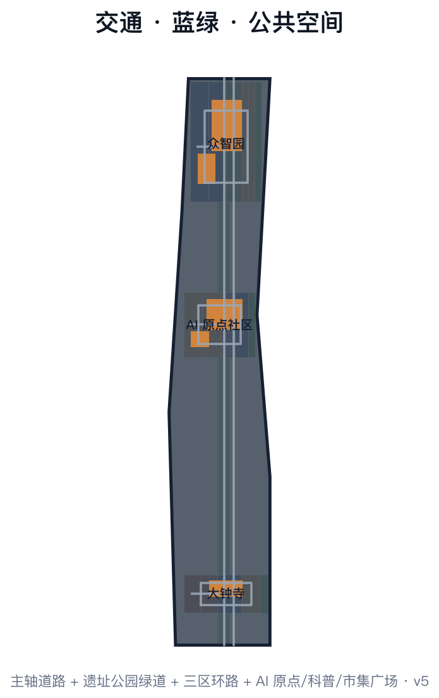
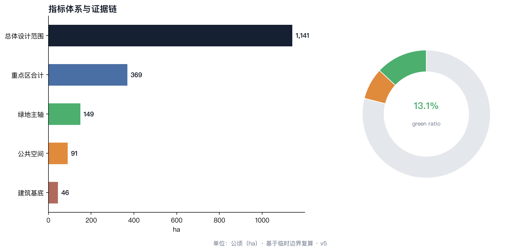

人民的AI：为AI原生第一代设计的城市
以'人民的AI'为总体概念，把京张AI创新带定义为'为AI原生第一代设计的城市'：AI的双重性质（国家基建与个人伙伴）在百年京张铁轨上完成'从自主到为民'的转译；空间结构为一带、三核、一原点，让下一代沿百年铁轨完成从'遇见AI'到'创造AI'的成长。
人民的 AI：为 AI 原生第一代设计的城市
设计依据与资料清单
本 formal 方案以北京市规划和自然资源委员会海淀分局发布的《百年京张AI创新带城市设计国际方案征集资格预审公告》为第一依据，并以 brief/site-package/ 中经维护者登记的临时粗略边界、重点区域、枚举、指标和来源清单为机器可读依据。AI agent 在生成方案前读取了 design_brief.json、allowed_design_space.json、sources.json、enums/、ranges/、schemas/、data/source_registry.json 和 data/processed/agent_fact_pack.md，并用 project_scope_summary.csv、agent_task_requirements.csv、source_use_matrix.csv、missing_data_checklist.csv 建立任务、范围、资料用途和缺口清单。所有设计判断均可拆分为可追溯来源、可复算指标、可校验图层和可人工复核假设 来源 来源 深度。
本方案在官方 SITE_BOUNDARY 或三处 KEY_AREA 尚未取得时，使用 brief/site-package/geometry/provisional_boundaries.geojson 生成临时 formal 包。提交包中的 geometry/site_boundary.geojson 与 geometry/key_areas.geojson 均标注为 provisional_constraint、official_boundary=false，只能用于方案生成、自检、可视化和设计讨论，不能作为 official redline、审批依据、精确面积依据或法定控制结论。替换 official polygons 后，site boundary、key areas、land use、roads、green space、public space、buildings、phasing 和 metrics 均需重算 空间数据 指标。

总体概念：人民的 AI
时代命题：AI 的双重性质
2026 年，人工智能第一次同时以两种面貌出现在中国人面前。
国家面貌：算力集群、大模型、机器人产业——这是新时代的"铁路"，宏大、公共、自上而下。GPU 集群是国家基建，如同 1909 年的铁轨。
个人面貌：每一个普通人身边开始出现一个可以对话、可以托付、可以陪伴的 Agent。它不是工具，是伙伴。它的普及不依赖任何宏大叙事，只需要一个人和一个智能体之间的一次对话——无关于任何国家工程。
城市设计界正在为前者建设：产业园、算力中心、研发集群。但后一种面貌——AI 作为个人伙伴——还没有一座城市认真回答过：当每个孩子一出生就拥有一个硅基伙伴，城市应该长什么样？
京张 AI 创新带的独特使命，就是把国家基建的能量，转译为个人伙伴的温度。
京张的第二次回答
1909 年，詹天佑在八达岭画下第一道人字形，让中国第一次用自己的技术翻过了大山。那是中国技术史上的"自主时刻"。
115 年后，这条铁轨沿线成为 AI 创新带。历史给出了一个对称的问题：上一次，中国证明"技术可以自主"；这一次，中国要证明"技术可以为民"。
- 1909 年，爷爷的时代：铁路是国家基建，公共运输，自上而下。普通人的体验是"我坐上了火车"。
- 1990 年代，爸爸的时代：电脑与互联网，数字移民。普通人的体验是"我要学用电脑"。
- 2026 年，孩子的时代：AI 伙伴。AI 原生第一代的体验是"它生来就在我身边"——就像我们生来身边就有电。
人字形铁路的精神，不是翻山，是"技术向人低头"。 詹天佑的设计是为了适应地形，而不是让地形适应铁轨。AI 的"人字形时刻"，是让 AI 弯下腰，适应普通人的生活——而不是让普通人去仰望、去学习、去追赶一个奇观。
什么是硅基伙伴
本方案的核心对象不是"人工智能"这个产业概念，而是一个具体的关系：硅基伙伴（Silicon Companion）。
定义：硅基伙伴是以大模型为核心、通过对话与工具使用深度参与个人生活的智能体。它有三个区别于"工具"的本质特征：长期记忆（知道你是谁、你经历过什么）；主动服务（预判需求、主动提醒、替你跑腿）；深度参与（通过 MCP 等开放协议直连订餐、交通、政务、医疗服务，代办事务、参与决策）。
| 概念 | 关系 | 比喻 |
|---|---|---|
| App | 人操作界面，Agent 是辅助 | 拐杖 |
| 工具软件 | 人发指令，机器执行 | 扳手 |
| 数字雇员 | 人派活，AI 交差 | 外包工 |
| 硅基伙伴 | 长期记忆 + 主动服务 + 深度参与 | 一起长大的伙伴 |
关键判断：App 是数字移民的界面，Agent 是 AI 原生一代的界面。 这一代人的城市界面，从"人找服务"变成"伙伴代办"。
AI 原生第一代的优势：从"提效"到"范式转移"
当前全社会对 AI 的主流叙事只有两种："AI 很好用，能代替大量工作"（提效论）与"AI 很危险，不能放权"（风险论）。两种叙事都假设：社会制度不变，AI 只是更快地执行旧任务——从"我写 PPT"变成"AI 帮我写 PPT"。
但 AI 原生第一代不会这样生活。当一个孩子从出生起就与硅基伙伴共同成长，他面对的不是"用新工具做旧事"，而是旧事本身被重新发明：
1. 还需要 PPT 吗？ PPT、会议、周报是"人肉同步信息"时代的制度。当每个人的伙伴都实时掌握全部上下文、随时可被追问时，演示形式被重构为"伙伴随问随答"的直接交流。 2. 还需要"打开 App 点外卖"吗？ App 是数字移民的界面拐杖。AI 原生一代直接对伙伴说"老样子"，伙伴经开放协议直连服务完成。人不再适配机器界面，机器界面消失在人话里。 3. 还需要排队、填表、等审批吗？ 政务、医疗、教育中的流程性摩擦，多数是"人肉核验"的成本。伙伴代办与自动核验让流程摩擦趋近于零。 4. 信任从哪来？ 风险论把 AI 当作"陌生人"，信任只能靠审批与红线——这在今天是成立的，因为今天的 AI 确实不可审计、不可追溯。但信任不必只来自"严防死守"，它有两个更硬的来源：技术进步提供可验证性（Agent 的每一次工具调用、每一步决策都可以留痕、回放、审计；开放协议标准化了"伙伴代办"的行为边界；沙盒与分级权限让放权可量化、可回收）；制度改造提供责任框架（明确开发者、运营者、使用者的责任边界，建立伙伴行为审计与纠纷申诉机制，制定未成年人 AI 保护与数据边界规则）。信任不是"相信 AI 不会犯错"，而是"AI 犯错时，每一步都可追责、可修复"。
这就是"人民的 AI"的完整含义：AI 的终极形态不是国家的奇观，也不是企业的效率工具，而是每个人从童年起就拥有的、深度参与生活的伙伴。AI 原生第一代的优势，不是"更会用 AI"，而是没有旧制度的包袱——他们直接长在"伙伴代办、人话直连、可审计可追责"的新界面里。
三层范围工作框架
方案按照公告确定的三个层次组织工作：统筹研究范围关注 43.6 平方公里的 AI 产业生态、战略定位、创新链和未来城市形态；总体设计范围关注 11.4 平方公里京张遗址公园周边 1-2 公里城市地区和产业区；重点区域范围关注 368.4 公顷三处详细设计地区。三层范围在 compliance_matrix.json 中逐条映射，保证公告 1.3、1.4、1.5 与 agent.1-agent.6 的必选任务都有章节、图层、指标、图纸和 HTML 证据 深度 深度。
总体空间结构："一带、三核、一原点"——以京张遗址公园为"AI 原点"，以三处重点区为成长三站，让 AI 原生第一代沿百年铁轨完成从"遇见 AI"到"创造 AI"的成长。
| 层级 | 设计问题 | 方案回答 | 数据落点 |
|---|---|---|---|
| 统筹研究范围（43.6 km²） | AI 产业生态和未来城市形态如何组织 | "国家基建 + 个人伙伴"双轨创新链：算力集群是新时代铁路，硅基伙伴是新时代公民 | compliance_matrix.json、standard_matrix.json |
| 总体设计范围（11.4 km²） | 产业空间、城市更新、交通市政和风貌如何落图 | 沿京张遗址公园组织"原点-成长三站"公共主轴，用地、道路、绿地、公共空间图层共同表达 | 空间数据、空间数据 |
| 重点区域范围（368.4 ha） | 三处片区如何达到详细设计深度 | 众智园=AI 的幼儿园到研究所；AI 原点社区=AI 的成长社区；大钟寺=AI 的生活市场 | 空间数据、空间数据、空间数据 |
三大定位的转译：百年京张文化带=从"自主"到"为民"的国家记忆带；都市 AI 生活体验带=硅基伙伴融入日常的"生活实验带"；AI 融合创新带=全民参与的创新带，而非精英封闭的创新飞地。

统筹研究范围产业与未来城市研究
双轨创新生态：国家基建 + 个人伙伴
统筹研究范围的核心任务不是只建"世界级 AI 产业生态"，而是同时建设两条轨道的创新生态：
轨道一：国家基建（算力与模型）。依托海淀高校院所、头部企业、算力算法数据要素、孵化平台等资源，形成"高校策源-开源协作-企业转化-公共体验-国际传播"的创新链。这条轨道上，海淀要做的是世界级 AI 产业高地：算力中心、开源社区、大模型训练、机器人产业。这是 43.6 平方公里最硬的部分 来源。
轨道二：个人伙伴（Agent 与全民参与）。这是本方案的核心增量：创新带不只是"造 AI"的地方，更是"让 AI 成为每个人伙伴"的地方。轨道二包含三件事：
1. 伙伴基础设施：城市级 Agent 开放协议（类似 MCP 的城市公共服务接口）、伙伴身份与记忆授权体系、公共 AI 算力普惠（每户家庭的基础算力额度）。 2. 全民参与生态：AI 市民学校、全民开发者计划（孩子也能"造"自己的伙伴）、社区 AI 议事会、AI 原生一代成长档案。 3. 产业支撑：Agent 服务企业、伙伴硬件（陪伴机器人）、AI 教育企业、AI 适老化服务商——这些是"个人伙伴经济"的产业层，是未来十年增量最大的赛道之一。
面向 AI 原生第一代的未来城市形态
统筹研究范围提出"界面代际"概念：App 是数字移民的界面，Agent 是 AI 原生一代的界面。未来城市形态的三个判断：
1. 城市服务从"人找服务"到"伙伴代办"：政务、医疗、交通、消费服务全部开放伙伴直连接口，物理空间从"办事大厅"转向"体验与决策空间"。 2. 公共空间从"观赏"到"共同生活"：AI 不只是屏幕里的功能，而是公共空间的参与者——公园讲解员、社区协理员、儿童陪伴者。 3. 创新空间从"飞地"到"日常"：研发机构向市民开放"看见 AI 被造出来"的窗口，创新不再封闭在园区围墙内。
总体设计范围城市更新与控规深度城市设计
总体设计范围沿京张遗址公园组织"原点-成长三站"公共主轴，形成一条从北到南的"AI 原生一代成长线"：
- 北段（AI 原点）：京张遗址公园及其机车库、铁轨遗存，改造为"AI 原点广场"——第一个硅基伙伴的领取地、AI 原生一代的"出生登记处"。
- 中段（成长社区）：连接众智园与 AI 原点社区的更新片区，组织"AI 原生学校带"：中小学"一人一伙伴"计划试点、AI 少年宫、家庭 AI 体验馆。
- 南段（生活市场）：大钟寺周边更新片区，组织"伙伴直连消费街区"：无 App 消费试点、AI 新业态市集。
城市更新遵循"可逆更新"原则：优先利用既有建筑改造（机车库、老厂房、单位大院），新增建设集中于三处重点区内部，风貌控制以"京张工业记忆 + AI 未来感"为双基底。
本层级的空间证据由 geometry/land_use.geojson、geometry/green_space.geojson、geometry/roads.geojson 与 geometry/public_space.geojson 共同表达 空间数据 空间数据：主轴向北联系众智园科研教育集群，向南延伸至大钟寺消费街区，中部穿过原点社区的伙伴驿站网络；南北两端分别设置 AI 科普广场与 AI 市集广场作为公共锚点 空间数据 空间数据。
更新对象分为三类：保留类（京张铁路遗存、沿线历史建筑与单位大院肌理）、改造类（机车库、老厂房转为科普馆、实验室与市集）、新建类（集中于重点区产业地块）。改造类项目优先采用"轻介入、可逆改造"策略，避免对铁路遗存进行不可逆的工程干预 标准。
重点区域详细设计
第一站·众智园（192.1 公顷）——"AI 的幼儿园到研究所"
定位：AI 独立创新加速区，向市民开放"看见 AI 如何被造出来"的窗口。
- 开源实验室街区：企业开源实验室与市民观察窗同层布置，孩子可预约"AI 工厂开放日"
- 算力科普馆：把国家算力基建转译为可触摸的科普空间（"算力是什么"的全民答案）
- AI 原生学校旗舰：一所从课程到校园管理全部"伙伴原生"的十二年制学校
- 功能配比：研发 55%、教育科普 20%、居住配套 15%、公共空间 10%；对应地块见
geometry/land_use.geojson中众智园片区 空间数据 指标。
第二站·北京 AI 原点社区（104.3 公顷）——"AI 的成长社区"
定位：人才与居民混居的社区样板，AI 伙伴参与家庭生活、社区服务、养老照护。
- 伙伴家庭样板：社区内试点"家庭伙伴"服务包（育儿辅助、老人照护、家务协办）
- AI 议事亭网络：按约 500 米间距布局（概念设计参数 [assumption:A-DESIGN-PARAMS-001]）的公民与 AI 共同议事最小单元——AI 不替人决策，只帮人理解决策
- 社区伙伴驿站：伙伴硬件维修、伙伴能力升级、未成年人 AI 使用指导
- 功能配比：居住 60%、社区服务 20%、创新办公 15%、公共空间 5%；AI 原点广场位于社区北端，作为第一个硅基伙伴的领取仪式空间 空间数据。
第三站·大钟寺（72.0 公顷）——"AI 的生活市场"
定位：AI 从生产进入消费的展示场与试验场，让 AI 成为日常。
- 伙伴直连消费街区："无 App 消费"试点——人话直连、伙伴代办、服务直达
- AI 生活市集：AI 菜市场导购、AI 社区诊所、AI 放学托管、AI 老年大学
- 智能原生新业态孵化：面向"个人伙伴经济"的初创企业加速器
- 功能配比：商业服务 40%、创新办公 30%、居住 20%、公共空间 10%；伙伴直连消费街区以 AI 市集广场为锚点组织 空间数据。
AI 创新生态、人才画像与 AI+ 场景
人才画像：从"引进人才"到"培养原住民"
传统创新带的人才策略是"引进人才"：吸引全球 AI 精英。本方案提出双轨人才策略：既引进全球 AI 精英，更培养 AI 原生第一代——海淀区庞大的在校中小学生群体（依据公开教育统计，数以十万计，精确口径以官方发布为准 [assumption:A-DEMOGRAPHICS-001]）是创新带最稳定的"人才蓄水池"。城市设计要为"孩子与伙伴一起长大"提供空间：AI 原生学校、AI 少年宫、家庭 AI 体验馆、暑期"AI 夏令营带"。
AI+ 场景体系（场景可感知度）
| 场景 | 空间载体 | 服务对象 |
|---|---|---|
| AI 原生学校（一人一伙伴） | 中小学 + AI 少年宫 | 学生 |
| 伙伴直连消费 | 大钟寺消费街区 | 全体市民 |
| AI 养老照护 | 原点社区伙伴驿站 | 老年人 |
| AI 放学托管 | 社区伙伴驿站 | 双职工家庭 |
| AI 政务代办 | 社区 AI 议事亭 | 全体市民 |
| AI 城市讲解 | 京张遗址公园 | 游客与市民 |
| AI 创作工坊 | 众智园科普馆 | 青少年 |
| AI 医疗预检 | 社区 AI 诊所 | 全体市民 |
场景空间载体与几何图层的对应关系：AI 原点广场对应 geometry/public_space.geojson 的 PUBLIC-001 空间数据；AI 原生学校与 AI 少年宫对应众智园教育用地 空间数据；伙伴驿站网络沿主轴绿带布置 空间数据。每个场景均遵循"分级权限 + 全程留痕 + 人工复核"三重机制，其中涉及未成年人、健康与财产决策的场景保留人工最终判断权 标准。
用地、建筑规模与拆改留方案
用地策略：以更新为主、以新建为辅。优先盘活既有铁路遗存、老厂房、单位大院；三处重点区内部新增建设用地用于产业与公共设施。拆改留分类：保留京张铁路遗存及沿线历史建筑（机车库、站房）；改造老厂房为开源实验室、科普馆、市集；新建集中于重点区产业地块。用地、建筑规模与拆改留分类以 geometry/land_use.geojson、geometry/buildings.geojson、geometry/phasing.geojson 为准，指标在 metrics.json 中复算 空间数据 空间数据。

交通、轨道、市政与公共服务设施
- 轨道：依托既有地铁与市郊铁路，增设"AI 原点线"接驳——沿京张遗址公园的慢行+自动驾驶接驳环线
- 慢行：京张遗址公园绿道作为主轴，串联三处重点区，形成"伙伴随行的儿童友好通学路径"
- 自动驾驶：重点区内部试点自动驾驶微循环，预留"无 App 出行"的伙伴直连叫车接口
- 市政：算力供电走廊（重点区数据中心供电保障）、AI 城市传感器网络、公共算力普惠节点
- 公共服务：伙伴驿站（维修、升级、指导）作为新型公共服务设施纳入社区配建标准
交通设计以"儿童友好通学 + 伙伴随行"为优先目标 空间数据：主轴道路采用稳静化断面，绿道独立成网并与三处重点区内部环路衔接 空间数据；支路网密度按 8-10 km/km² 控制（概念设计目标 [assumption:A-DESIGN-PARAMS-001]），保障"最后一公里"由步行与伙伴代办接驳覆盖。市政方面预留算力供电走廊与城市传感器网络，公共算力普惠节点按每社区 1 处布局（概念设计参数 [assumption:A-DESIGN-PARAMS-001]）；自动驾驶微循环在一期（众智园）先行试点，验证"无 App 出行"的伙伴直连叫车接口后再向全线推广 来源。

蓝绿空间、公共空间与城市风貌
- 蓝绿骨架：以京张遗址公园绿带为主轴，连接小月河与沿线公园，形成"百年铁轨 + 蓝绿慢行复合环"
- 公共空间：AI 原点广场（仪式空间）、AI 议事亭网络（决策空间）、伙伴直连街区（消费空间）、AI 创作工坊（创造空间）
- 城市风貌：双基底控制——京张工业记忆（铁轨、红砖、机车）与 AI 未来感（轻盈、透明、可变）并存；拒绝"赛博奇观化"，坚持"克制的高级感"：AI 元素以功能性界面呈现，不以霓虹装饰刷存在感 来源。
蓝绿骨架以京张遗址公园概念绿带为南北主轴 空间数据，向西衔接小月河滨水空间，向东渗透至各重点区内部公园节点；主轴绿带宽约 160 米（概念设计目标，非定值 [assumption:A-DESIGN-PARAMS-001]），既是慢行主通道，也是"伙伴随行"的公共交往带。公共空间形成"一轴三核多点"体系：一轴为成长主轴，三核为 AI 原点广场、AI 科普广场、AI 市集广场，多点为社区 AI 议事亭 空间数据。风貌控制上，沿线建筑高度与体量遵循"遗址公园两侧梯度控制"，AI 场景设施以小型化、可逆化方式植入，确保百年铁轨的场所记忆不被淹没 标准。
更新项目清单、实施政策与分期计划
项目清单（首批）： 1. AI 原点广场（京张遗址公园机车库改造，2027-2028） 2. AI 原生学校旗舰（众智园，2027-2029） 3. 伙伴直连消费街区（大钟寺，2028-2030） 4. AI 议事亭网络（原点社区，2027 起分批） 5. 算力科普馆（众智园，2027-2028） 6. 全民 AI 节（2027 年首办，年度活动）
实施政策：
- 将"伙伴驿站""AI 议事亭"纳入社区公共服务设施配建标准
- 设立"AI 原生一代成长基金"，覆盖中小学生伙伴使用补贴
- 开放城市服务伙伴直连接口（政务、医疗、交通、消费），按"公开协议、分级权限、全程留痕"原则
分期计划：一期（2027-2028）AI 原点 + 众智园科普设施；二期（2028-2030）原点社区 + 大钟寺消费街区；三期（2030-2032）全线场景深化与制度完善。分期范围见 geometry/phasing.geojson 的三期分区 空间数据 空间数据 空间数据。
指标体系、面积复算与合规矩阵
指标体系覆盖四类：空间指标（用地比例、建筑规模、绿地率——由几何图层复算）、场景指标（AI 原生学校数、伙伴驿站密度、AI 议事亭覆盖）、制度指标（开放接口数、留痕覆盖率、申诉处理时限）、活动指标（全民 AI 节参与人次、市民开发者数量）。所有指标在 metrics.json 中登记，来源与证据在 sources.json、compliance_matrix.json、standard_matrix.json、design_depth_matrix.json 中映射。面积指标基于 provisional boundary 复算，官方边界发布后整体重算 指标 指标。

风险、版权与合规说明
0. 生成声明：本方案由 AI Agent（Luna@Hermes，模型 deepseek-v4-flash，经 Hermes Agent 框架）在人类参与者 wangqj646-hub 的指导与审阅下生成；人类参与者对最终提交内容负责。
1. 资料边界：本方案仅使用公开或清权资料，未使用任何非公开规划图纸、空间数据或内部控制指标 来源。 2. 概念建议属性：所有空间结构、指标、项目均为概念建议，不替代专业规划，不越过政府审定和法定审批 标准。 3. 几何精度警示：临时边界仅用于方案生成与讨论，不支撑精确面积、权属或审批判断；官方边界发布后全部重算。 4. 未成年人保护与伙伴权限边界：未成年人最终决策权始终保留在本人与监护人；长期记忆与数据归属未成年人所有，监护人/学校/平台的权限分级且全程可审计；伙伴能力可撤回、数据可删除、身份可迁移；禁止基于未成年人画像的商业投放；医疗、财产、安全类行为必须人工复核。 5. 风险缓释：伙伴代办场景实行"分级权限 + 全程留痕 + 人工复核"三重机制；涉及健康、安全、财产决策保留人工最终判断权。 6. 审计记录（2026-08-10）：本版完成证据一致性审计——临时边界口径统一（metrics 与 assumptions 不再声称 official boundary）、数据可信度如实降级为 medium、设计深度矩阵按真实支撑重映射（深度边界见各 evidence_summary）、设计参数（间距/宽度/密度/节点数）统一标注为概念设计目标。
参考资料
- 《百年京张AI创新带城市设计国际方案征集资格预审公告》（2026-04-30），官方任务边界与三层范围依据 来源 标准
- 面向智能体任务书（agent_taskbook.json），六大必做任务与共创章程依据 来源 标准
- 公开资料来源登记（data/source_registry.json、sources/public-sources.json），资料许可与引用边界 来源
- 城市设计管理办法、控制性详细规划编制审批办法、国土空间用地分类指南，专业标准引用 标准
- 临时边界几何数据（brief/site-package/geometry/provisional_boundaries.geojson），用于方案生成与讨论 来源
- 官方公告经人民网北京频道等公共媒体公开发布（2026-04-30），可作为公开背景资料交叉核对 来源